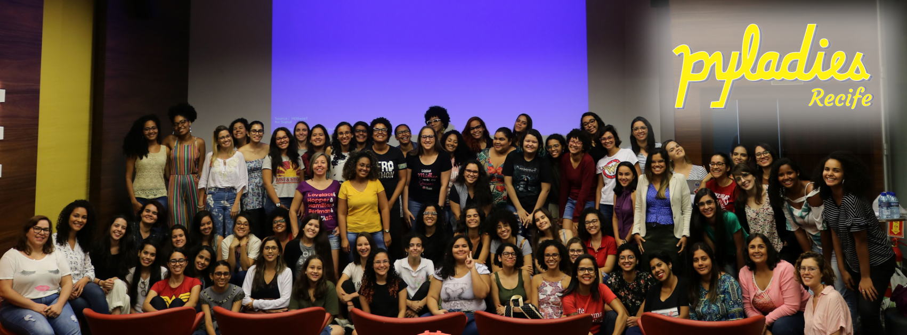

PyLadies Recife y la lucha por equidad de género
PyLadies Brasil
PyLadies Recife es una de las comunidades de la red PyLadies Brasil, la cual hizo su primer evento en 29 de marzo de 2014 para más de 100 mujeres através del PyLadies Natal, el primer capítulo de PyLadies en América Latina. Las cofundadoras fueron Gabriela Cavalcante, Ana Clara Nobre y Katyanna Moura.
Actualmente hay alrededor de 30 capítulos en todo país. Durante la pandemia estamos nos mantenendo activas através de actividades en línea, siendo la próxima el Papo entre PyLadies. La idea del proyecto es hacer una serie de videos, donde cada episodio será una conversación entre tres capítulos lo cual uno de ellos será el tema. El objetivo es conocer el trabajo que cada capítulo hace en su región.
PyLadies Recife
Impartió en 06 sep. 2014 con un evento para más de 30 mujeres, con una estructura similar al del evento en Natal: una mañana de charlas y en la tarde hubo dos talleres, uno para iniciales y otro intermedio. Hoy en día somos más de 200 mujeres en el grupo de Telegram.
En su esencia la PyLadies es una comunidad autogestionada y en Recife es igual. No hay jerarquía o tampoco requisito para estar ahí, la única regla para estar en nustro grupo de Telegran es que seas una mujer cis o transgénero. Todos los temas son hablados en el grupo general y quién tiene interés, se va a un grupo temático temporario para seguir hablando hasta que el tema finalice. Así garantizamos la participación de todas que deseen, independiente de su disponibilidade, pues no hace falta estar involucrada a largo plazo.
Algunos de nuestros objetivos son:
- Dar soporte a mujeres que deseen estudiar tecnología;
- Dar visibilidad a trabajo de mujeres;
- Estimular el uso de la tecnología com herramienta para solventar un problema social.
Hacemos esto a través de eventos mensuales, que pueden ser charlas, workshop, jornada o un encuentro informal. Las ponentes y talleristas siempre son mujeres que pueden ser de la comunidad o no.
Esto año hicimos uno evento en febrero y luego empezamos la cuarentena, entonces estamos con una Llama para ponentes para lives abierta. La cual es también para mujeres y niñas que todavía no tienen una charla lista, pues alguna de nosotras tenemos disponibilidad y ganas de sermos mentoras para que más mujeres desarrollem esta habilidad.
Como pudister darte cuenta, no tenemos hombres en el grupo de Telegram, tampoco como ponentes/talleristas. Las razones van abajo.
Equidad de género
Creo que la forma más sencilla de enseñar equidad de género es hablar de la diferencia entre ella y la igualdad de género, pues es más común oír a cerca de esta segunda.
La igualdad es dar la misma oportunidad, derechos y responsabilidades a todos. Ya es un principio jurídico universal, todavía no es una realidad. Tiene en cuenta que uno de los Objetivos de Desarrollo Sostenible (ODS) de la ONU es “Lograr la igualdad entre los géneros y empoderar a todas las mujeres y las niñas” (5. Igualdad de Género).
Todos no tenemos los mismos privilegios o la ausencia de ellos, así que la “equidad” introduce además un componente ético, tiene en cuenta las diferencias entre los grupos para asegurar una igualdad real.
Fuente: Autoria desconocida
El Foro Económico Mundial (FEM) de 2017 asegura que la brecha de género no se cerrará como mínimo en 100 años. Para los estudios se fijaron en 5 puntos: la participación política de las mujeres, el acceso a la educación, el acceso al mercado de trabajo, la violencia de género y legislación existente destinada a asegurar medidas que garanticen la equidad de género.
Las comunidades de mujeres en tecnología se ponen, principalmente, en dos puntos: el acceso a la educación y el acceso al mercado laboral. Entonces, en los eventos de PyLadies Recife la prioridad de las plaza son para mujeres y niñas.
Representatividad de género
No es raro oír cosas como “hijo de puta” o “estás manejando como una chica” para despreciar o desestimar a alguién. Yo siempre me quedo con la duda “¿Cúal es el problema de mi madre ganar dinero haciendo sexo, una cosa lícita, no?”.
Siempre pusieron a las mujeres en papeles muy específicos de la sociedad, y por años las niñas creyeron que solamente podrían ser el mismo que sus madres y los otros papeles que veía mujeres haciendo no eran “tan buenos”.
Daí viene la importancia de dar visibilidad a trabajo de mujeres, para que más de nosotras estemos en sitios donde podamos hablar de nuestro trabajo y inspirar otras mujeres y niñas, además decirles “Ustedes pueden ser lo que quiera!!!”.
Ya tenemos demasiados eventos que solamente hay 1 o 2 mujeres como ponentes (cuando lo hay). Pensamos que hay mujeres suficientes para cuantos eventos quieras hacer en tu ciudad. Hay que encontrarlas y poner luz a sus trabajos.
Esta es Lesly Zerna, Directora de Inovación, Investivagicón y Desarrollo en la Agencia de Gobierno Electrónico y Tecnologías de Información de Bolivia.
En las fotos abajo somos nosotras de PyLadies Recife, mujeres muy diversas y con diferentes conociminetos.

Taller TDD con Python - fev. 2020
Jornada en conjunto con la comunidad PUG-PE
Ponentes recifenses de la conferencia Python Brasil 2019

PyLadies Day 2019
Referencia
- Primeiro encontro Recife
- ODS - Objetivo 5: Igualdad de Género
- The Global Gender Gap Report 2017
- Como si de esto dependiera mi vida - LESLY ZERNA - TEDxUSFX
Este texto son los apuntes de la charla “PyLadies Recife y la lucha por equidad de género” que presenté en el evento Tech Ladies promovido por PyLadies Cochabamba (Colombia). Recursos:
-----